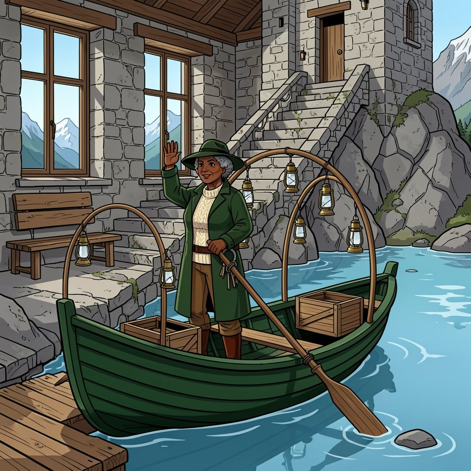

Titistoire › Les Galaxies (8-10 ans)
D'un soleil à l'autre
Haute-Lanterne, épisode 8 sur 8 : un feuilleton à énigmes dans un vieux château-phare au milieu d'un lac.

▶ Écouter et regarder l'histoire
Gratuit, sans inscription : la voix lit, le texte suit mot à mot, les images tournent comme dans un album.
Le texte de l'histoire
Le trente, il ne restait qu'une nuit avant la dernière. Tout en haut de la tour, la Grande Lanterne n'éclairait plus que ses propres vitres. Mais les six de la carte savaient enfin pourquoi leur château était coupé en deux : pour un courant d'air. Personne n'avait menti. Et cette vérité-là, ils la gardaient pour le lendemain soir.
Restaient deux ennuis. Le premier, Kenza le régla en regardant les volets. « Le soir, le soleil est de notre côté. On ouvre notre volet, et le vôtre reste fermé. Le dernier rayon passé, on ferme. Au matin, vous ouvrez le vôtre. — Jamais les deux à la fois, comprit Elias. À chaque aile sa fenêtre. — À chaque aile son heure », corrigea-t-elle.
Le second, ce fut Tom qui le régla. « Les Couchants ne dorment jamais avant minuit : ils veillent du soir à minuit. Les Levants se lèvent avant le soleil : ils veillent de minuit au matin. Une aile toute seule ne tient pas une nuit. Les deux bout à bout, si. J'ai compté. — Comme les deux moitiés », remarqua Maya.
« Et Nour ? demanda Sami. Elle dort chez nous, et elle se lève comme eux. » Nour n'avait toujours pas d'écharpe. « Je ferai les deux veilles, si cela ne dérange personne. » Elias ouvrit son carnet, barra la règle sur les gens sans écharpe, et le referma. « Elle n'a jamais été bonne, celle-là. »
Le trente et un, pour la première fois depuis des jours, il ne plut pas. Zora déclara que c'était suspect. Elle chargea des caisses vides dans la Luciole et partit pour la rive, d'où elle rapporterait la lampe ordinaire, le lendemain à l'aube. « Soyez sages, lança-t-elle du ponton. Ou soyez discrets. » Elle ne précisa pas ce qu'elle préférait.
Avant le coucher du soleil, six ombres se glissèrent dans le couloir des jours impairs. Elias portait la moitié du Levant, Kenza celle du Couchant, Sami son coussin. Devant la petite porte, les deux chefs chuchotèrent les deux noms, sans grimace.
Dans la chambre, on posa les deux moitiés sur la table, bord contre bord. Les sept dents entrèrent dans les sept creux. Sur la carte, la barque dormait à son ponton, et les deux petits personnages se tournaient toujours le dos. Nour ouvrit le volet du couchant : c'était celui de son aile. Tom vérifia deux fois l'autre. Fermé.
Le soleil descendit sur les montagnes. Elias prit une anse de la Première Lanterne, Kenza l'autre. Un rayon rouge entra par la fenêtre étroite et toucha le bord de la table. « C'est le dernier, souffla Tom. Je compte. Un. Deux… » Il n'eut pas besoin d'aller jusqu'à trois.
« Personne n'a menti », prononcèrent ensemble Elias et Kenza. Ils le dirent pour Dame Mira et pour Maître Tarek, pour le Levant et pour le Couchant, et pour trois cents ans de thé bu de chaque côté d'un trait. Dans la Première Lanterne, une flamme se leva. Elle n'était pas grosse comme une lentille. Elle était haute comme la main.
Au mur, il y eut un déclic, puis deux, puis trois. Les trois vieilles horloges s'étaient remises à battre, ensemble. « Cent horloges qui marchent », murmura Tom, et il dut s'asseoir. Kenza ferma le volet du couchant. Le rayon disparut. La flamme, elle, resta bien droite dans la chambre close.
À onze heures, ce fut la seule flamme encore allumée dans le château. Dans la salle des Horloges, l'horloge de personne avança de son dernier cran. Il n'en restait plus. Tout en haut de la tour, la Grande Lanterne cligna une dernière fois, et ne se rouvrit pas. Sur tout le lac, il n'y eut plus qu'une lumière, et elle tenait dans une lanterne grosse comme une poire.
Les Levants se couchèrent sur le plancher, comme convenu, et s'endormirent aussitôt : ils savaient faire. Les Couchants s'assirent autour de la table. Nour aussi.
Bien avant minuit, la flamme n'était déjà plus haute que d'un doigt. « Elle a faim, comprit Nour. Il lui faut d'autres vérités. Des grandes. Pas de la pluie. » Sami se dévoua. Il avait l'air très étonné de ce qu'il allait dire.
« Je n'ai pas sommeil. » La flamme remonta d'un bond. « C'est vrai. Je n'ai pas envie de dormir. Je ne veux pas rater ça. » Il n'ajouta pas « Tadam ». Il s'assit sans s'appuyer à rien, et garda les deux yeux ouverts jusqu'à minuit.
Kenza tourna longtemps sa clé entre ses doigts. « J'ai eu peur, avoua-t-elle enfin. Chaque soir, je répétais que Maître Tarek n'était pas un voleur, et ma lanterne s'allumait. Mais j'avais peur qu'elle s'allume seulement parce que j'y croyais. » La flamme monta, tranquille, et l'éclaira tout entière.
Puis la cloche de la tour se mit à sonner. Tom se réveilla au premier coup : c'était l'heure de son aile. Il compta. Dix. Onze. Douze. Derrière la porte, le bleu du couloir ne pâlit pas. Le plancher ne s'en alla pas. Tom regarda ses pieds. Ses chaussures y étaient. « Nous sommes le premier », annonça-t-il.
Les Couchants s'endormirent en tas, Sami avant les autres. Les Levants prirent la veille. Vers deux heures, la flamme baissa de nouveau. Tom se racla la gorge. « J'ai compté quatre-vingt-dix-sept horloges pendant deux ans. Je me trompais. Et je suis content. J'aime mieux qu'il y en ait cent. » La flamme grandit.
Maya resta longtemps sans parler, ce qui ne lui ressemblait pas. « Je n'invente pas pour mentir, souffla-t-elle. J'invente parce que j'ai peur qu'on ne m'écoute pas, si je raconte seulement ce qui est. » Elle renifla. « L'autre jour, on m'a écoutée. » La flamme monta si haut qu'elle fit briller les trois horloges.
Restait Elias. Il regardait son écharpe, blanche de craie d'un bout. « J'ai tracé un trait dans cette chambre. Le même que Dame Mira. J'ai fait exactement comme elle, et je ne m'en suis pas aperçu. » Il respira un grand coup. « J'ai eu tort. » La flamme toucha presque le plafond. « Deux fois en trois jours, nota Tom. — N'en prends pas l'habitude », grogna Elias.
Puis vint l'heure la plus creuse. Maya glissa contre le mur. Elias s'endormit assis très droit. Tom compta ses bâillements, et le sommeil le prit au dix-septième. Dans la chambre, il ne resta qu'une personne éveillée. Elle n'avait pas fermé l'œil de la nuit.
Nour était assise sur un des deux tabourets, la Première Lanterne devant elle. La flamme redevenait petite : un doigt, un ongle, une lentille. Nour songea à réveiller quelqu'un. Puis elle se rappela un matin de brouillard, une barque, et une lanterne noire qui ne voulait pas de sa politesse.
« Je ne voulais pas venir », avait-elle dit ce matin-là. Elle se pencha vers la petite flamme, et chercha ce qui était vrai maintenant. Ce fut facile. Elle n'avait jamais rien dit d'aussi facile. « Je veux rester ici. » La flamme se redressa, grandit, grandit encore, et toute la chambre devint dorée.
Derrière le volet du levant, quelque chose pâlissait. Nour se leva. Ce n'était pas sa fenêtre : elle dormait au Couchant. Ce n'était pas son heure non plus. « Pardon », murmura-t-elle, par politesse. Et elle l'ouvrit.
Le premier rayon du matin entra, tout droit, et toucha la Première Lanterne. La flamme devint deux fois plus haute. Au mur, les trois horloges sonnèrent à toute volée. Cinq dormeurs se dressèrent d'un coup. « Le soleil ! cria Tom. Elle a tenu ! D'un soleil à l'autre ! » Sami ouvrit les deux yeux. Cela devenait une habitude.
Il fallait la monter, à présent. La Première Lanterne avait deux anses. « Après toi, offrit Elias. — Je n'en ferai rien. Après toi. — J'insiste. — Le Couchant insiste davantage. » Ils en étaient là, très polis tous les deux, quand ils s'aperçurent que la lanterne n'était plus sur la table. Tom tenait une anse. Sami tenait l'autre. Ils étaient déjà dans l'escalier.
Il y avait deux cent six marches jusqu'au sommet de la tour. Tom ne les compta pas ; il le sut quand même. Sami ne s'assit pas une seule fois. Là-haut, sous les grandes vitres, la Grande Lanterne attendait, froide et grise. On ouvrit sa porte de verre. Les deux petits levèrent ensemble la Première Lanterne.
La grande prit feu à la petite, comme une bougie à une autre : un fil d'or, puis une flamme, puis une clarté si large qu'elle sortit par toutes les vitres à la fois, passa par-dessus le lac et alla se poser sur l'autre rive.
Sur l'autre rive, Zora chargeait une grosse caisse dans la Luciole. Elle leva la tête. Elle regarda la lumière. Elle regarda la caisse. Puis elle s'assit dessus, et but une tasse de thé entière. « Dans le temps, on la voyait de la rive », confia-t-elle au lac. Sous les arceaux, douze lanternes s'allumèrent d'un coup.
Dans la cour, Miss Ada sortit en robe de chambre, Maître Idris sur ses talons. « Idris. Il me semble qu'on a touché à la Grande Lanterne. — Il me semble aussi, Miss Ada. — Bien. Nous aurons donc une lampe de secours. Faites sonner l'heure du thé, voulez-vous ? Et six tasses bien fortes, pour ceux qui ont veillé. »
On fêta les trois cents ans dans la chambre aux deux fenêtres. « Elle est de quelle aile ? » demanda un petit. Elias ouvrit son carnet, et le referma. « Règle numéro un : c'est la fenêtre qui décide. Il y en a deux. Elle est aux deux ailes. — Voilà la première règle sensée depuis trois cents ans », déclara Kenza. Venant d'elle, c'était un bouquet de fleurs.
Zora arriva pour le thé, sans sa caisse. Elle tira de sa poche une écharpe et la tendit à Nour. Une moitié était violette. L'autre était jaune. « Je n'avais plus assez de violet. J'ai fini avec ce que j'avais. — C'est la fenêtre qui décide, s'écria Tom, et cette nuit Nour en a ouvert deux ! — Je sais compter aussi », répondit Zora.
Nour noua l'écharpe. Elle chercha quelque chose de neuf à dire, et ne trouva que sa plus vieille phrase. « C'est très gentil. » Toutes les lanternes brillèrent plus fort. Pour la première fois, c'était exactement ce qu'elle pensait.
Dans la salle des Horloges, le Trait resta où il était : on ne décolle pas trois cents ans de cuivre. Mais pendant la fête, quelqu'un changea les deux portraits de côté. Dame Mira et Maître Tarek se regardaient, d'un air un peu surpris. Zora avait un marteau dans la poche, et ne fit aucune remarque.
Le soir, Maya se pencha sur la carte, restée sur la table. Personne n'avait repris sa moitié. « Et le trésor ? bâilla Sami. — Tu es assis dedans, répondit Kenza. Personne ne l'a caché, et personne n'a rien brûlé. » Dans la chambre dessinée, les deux petits personnages d'encre s'étaient levés. Ils se tenaient face à face, et entre eux brûlait une lanterne pas plus grosse qu'un grain de sel.
Sur le lac d'encre, la barque avait quitté son ponton. Elle voguait vers le bord de la feuille, du côté où nul n'avait jamais rien dessiné. Elle y arriva, et elle attendit. « Imagine… commença Maya. — Demain », répondirent cinq voix. Dans la salle des Horloges, l'aiguille de l'horloge de personne était revenue avant son premier cran. Elle avait trois cents ans devant elle.